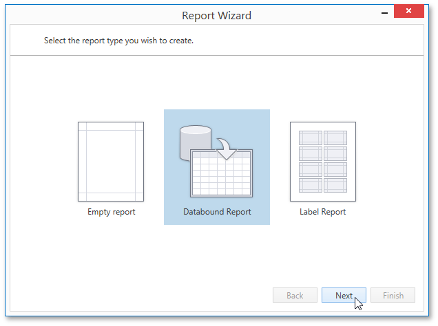

Report Wizard
The Report Wizard is a powerful tool that allows you to easily create reports based on built-in templates. It is automatically invoked when adding a new report in the Report Designer.

The Report Wizard provides three different ways to setup your report.
-
Choose this option to create a new blank report that is not bound to data and doesn't contain any report controls.
-
This option allows you to easily create a report bound to a desired data source (database, Entity Framework, object data source or excel data source) and generate its layout from scratch. While setting up the report, you can group and sort data, add totals, apply one of the predefined report style, etc.
-
Select this report type if you need to print out labels. In the Label Report Wizard, choose a required paper supplier and label type, and the report will be adjusted automatically. After completing the wizard, you get an empty report that clearly indicates label boundaries and properly positions labels within paper sheets.